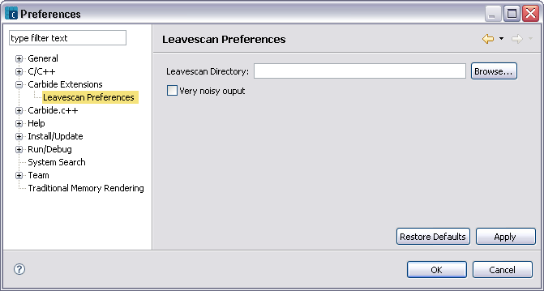

Leavescan Preferences
Use the  Leavescan Preferences page in the Preferences window to define the location where the leavescan.exe program exists on the file system. Symbian OS has a standard convention for functions that may Leave. Therefore, any function that Leaves, or calls a function that Leaves (other than in a TRAP harness), must have a name ending in "L". Leavescan verifies that your code satisfies this convention.
Leavescan Preferences page in the Preferences window to define the location where the leavescan.exe program exists on the file system. Symbian OS has a standard convention for functions that may Leave. Therefore, any function that Leaves, or calls a function that Leaves (other than in a TRAP harness), must have a name ending in "L". Leavescan verifies that your code satisfies this convention.

Figure 1. Leavescan preference page
Table 1. Leavescan Preferences —items
| Name | Function |
|---|
| Leavescan Directory |
Enter or Browse to the directory where leavescan.exe resides. Leavescan.exe is normally found in the ${EPOCROOT}\epoc32\tools directory.
NOTE The path to the Leavescan directory should not contain space characters. |
| Very noisy output |
If enabled, the -N option is passed to leavescan.exe and produces verbose output. If unchecked, minimal output is produced.
|
Related Tasks